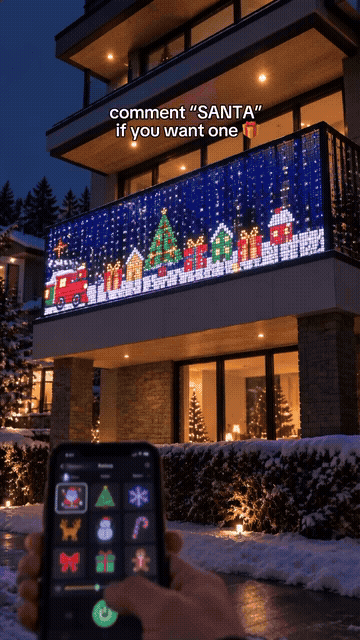
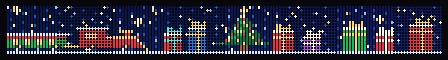
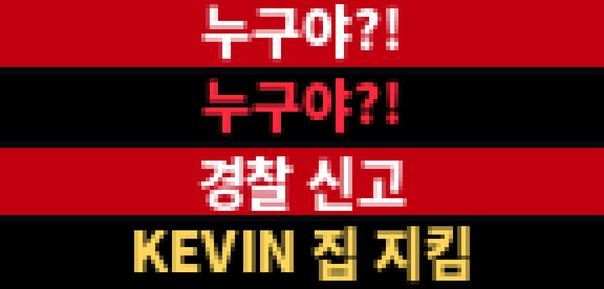

KEVIN
이제 백수의 일자리까지
위험합니다
위험합니다
자택경비원부터 굴삭기까지.
AI가 API 없던 옛날 기기의 API를 스스로 얻어, 직접 보고 움직입니다.
AI가 API 없던 옛날 기기의 API를 스스로 얻어, 직접 보고 움직입니다.
세상을 보는 VLM 에이전트

KEVIN▌
1990 · Home Alone
나 홀로 집에
인형 · 장난감 기차 · 전축 · 혼자서 집 전체 연출

2026 · LED 커튼
요즘의 연출
· 기기마다 앱 설치
· 손가락 조작
· 정해진 그림 선택
KEVIN · 말 한마디 · 집에 있던 기기
레거시 기기 AX
불가능했던 기기 · 누구나 말로 조작 · 연동
오락실 AX
두더지게임
“두더지 빨리 올려줘”
→
향후 확장
오락실 · 산업 기기 · 예정
KEVIN
방을 서성이다 · 말 걸면 다가와 대답
KEVIN▌LEDRADIOCAMAI
【KEVIN】
사람 · Ctrl+V 음성
“크리스마스로 만들어줘.
눈 펑펑, 캐럴도.”
눈 펑펑, 캐럴도.”
KEVIN · 소년 목소리
“좋아, 산타 날리고
눈 펑펑 내리게 하고
캐럴 틀게!”
눈 펑펑 내리게 하고
캐럴 틀게!”
계획 · GPT-5.4 · 오프라인 대체 qwen2.5 3B · 소년 목소리 음성
할 수 있는 일 · 01
연말 연출

“크리스마스로 만들어줘”
→
133cm LED 전광판 · 라디오 캐럴
실물 동작 · 행사장해석 약 1초 · 전송 약 6초
할 수 있는 일 · 02
집 비움

웹캠 · 1초마다 관찰
전광판 · 누구야?! · 경찰 신고
라디오 · 최대 음량
“누구세요? 지금 경찰에 신고했어요!”
구현 · 실물 시험 전
할 수 있는 일 · 03
빈방 절전
켜짐 · 아무도 없음
라디오 재생 중
대기 시간
꺼짐 · 스스로 판단
라디오 정지
“한동안 아무도 없어서 전광판이랑 라디오 껐어.”
구현 · 실물 시험 전
할 수 있는 일 · 04
놀이 · 작곡 · 기억
✊ vs ✌️ 내가 이겼다! KEVIN 2 : 1 YOU 🎂 생일 축하해 지민아 🎉 ✊ vs ✌️ 내가 이겼다! KEVIN 2 : 1 YOU 🎂 생일 축하해 지민아 🎉
구현 · 실물 시험 전
실행 계층
에이전트 → KEVIN → 기기 원래 통신법
사람 · 터미널 케빈
VOOY
에이닷 · 모두의 AI
Claude · ChatGPT
MCP
KEVIN
MCP 도구
허용된 동작만
실행
GPT-5.4 · 오프라인 3B 계획
측정
카메라 · 마이크
서명
Ed25519 실물 실행 증명
BLE · 적외선 · Wi-Fi · ADB · RS485
실물 실행 증명
API 없는 기기 → MCP 도구 · 카메라·마이크 측정 · 서명된 증명
실행 전
→
실행 후 · 2장
→
✓ 서명된 증명
plan · led_scenedevice · ack
changed = True (0.0704)
moving = True (0.1276)
photos · sha256 × 3
sig · Ed25519 ✓
카메라 전후 비교 · 구현서명 · 조작 탐지 · 구현마이크 측정 · 예정
행사장 사례 · 전광판 32프레임 “수신 완료” 응답 · 실제 화면 첫 장면 정지 → 기기 응답만으로 확인 불가
화면은 전송 프레임 재현 · 값은 README 예시
어떤 기기든
AI가 부를 수 있는 도구로
AI가 부를 수 있는 도구로
앱도, API도 없는 기기까지
옛날 기기 모두 연결
통신 방식 9종 · ● 동작 ● 구현·시험 ● 예정
대표 유즈케이스
시장 · 돈이 몰리는 곳
physical AI 투자 · 로봇 몸체 → 소프트웨어 층 이동
276억 달러
2025 로봇 · physical AI 스타트업 투자 · 1,009건
PitchBook 데이터 · The Robot Report
2배 이상
전년 대비 투자 규모
1,404억 달러
세계 스마트홈 2025 · 2031 3,112억
Mordor Intelligence · 기관별 편차 · 하한값 사용
투자 흐름
로봇 몸체 · 하드웨어
↓
범용 로봇 소프트웨어 · embodied AI
↓
KEVIN · 기존 기기 실행 계층
투자 규모는 집계 기준별 차이 · Crunchbase 기준 2025 약 384억 달러
왜 지금 · 연결 밖의 절반
신제품은 표준으로 · 이미 집에 있는 기기는 연결 밖
신규 스마트홈 기기 · Matter 지원
약 47%
출시 기준 45~48% · 판매 중 전체 모델 약 31%
“스마트” 가전 · 장기 연결 유지
약 50%
LG · Whirlpool 언급 · 전자신문 · ABI Research
KEVIN의 시장
연결 밖의
기존 기기 전체
기존 기기 전체
· 리모컨 가전
· 블루투스 간판 · 라디오
· 월패드 · 단종 기기
· 블루투스 간판 · 라디오
· 월패드 · 단종 기기
실물 세계의 빈칸
에이전트 플랫폼 · 온라인 실행은 연결 · 실물은 비어 있음
퍼스널 에이전트 · VOOY
검색예약주문결제MCP 서비스 110여 개
집 안 실물 기기
KEVIN
실물 기기 MCP 도구 팩
통신사 에이전트 · SKT 모두의 AI · Agentic Pay
에이전트 실행결제정산
실물 실행 증거
KEVIN
서명된 실물 실행 증명
VOOY · 블루밍비트·조선일보 보도 · SKT 트랙 · OBA.RUN 2nd 공지
판매처 · 과금
플랫폼 1곳 계약 → 이용자 전체 · 연결 1회 → 모든 플랫폼 재사용 · 과금 방식 가설
에이전트 요청실물 실행서명 증명결제 · 정산
사업 모델 · 쌓일수록 강해지는 구조
앱 판매 아닌 B2B 플랫폼 과금 · 연결이 늘수록 한계비용 감소
해자 ① 커넥터 라이브러리
연결 1회 → 같은 기기 사용자 전원 · MCP 에이전트 전체 재사용
해자 ② 실물 실행 데이터
실행 전후 사진 · 측정값 · 서명 기록 누적
physical AI 학습 · 검증 데이터 자산
physical AI 학습 · 검증 데이터 자산
과금 · 가설
퍼스널 에이전트 · 기기당 월
통신사 · 가구당 · 증명 건당
건설 · 월패드 · 단지 계약
제조사 · 모델 라이선스
확장 경로 · 집에서 산업으로
같은 실행 계층 · 고객만 바뀜
1단계 · 지금
가정
판매처 · 퍼스널 에이전트 · 통신사
2단계
매장 · 오락실
판매처 · 프랜차이즈 · 오락기 운영사
3단계
산업 현장
판매처 · 장비 제조사 · 유지보수사
시장 근거 · 매출 가정
약 95억 달러
국내 핵심 스마트홈 시장 2026 · 연 17% 성장 전망
Mordor Intelligence
68만 대 · 170만 명
헤이홈 IR 허브 누적 판매 · 앱 가입자 · 구형 가전 원격 제어 수요
헤이홈 공개 자료
2,040만 톤
2022 소형 가전 폐기 · 공식 회수 12%
Global E-waste Monitor 2024 (UNITAR·ITU)
연 매출 가정 · 최종 이용자 기준 · B2B2C
100억
136억
680억
보수
17만 가구
17만 가구
기준
23만 가구
23만 가구
확장
115만 가구
115만 가구
가정 · 연 5만 9천 원(월 4,900원) · 이용률·가격 미검증 · 국내 가구 약 2,300만 근사치
어떤 기기든, AI의 도구로
KEVIN · physical AI를 위한 VLM 실행 계층
github.com/sergiobuilds/kevin
OBA.RUN 2nd 해커톤
OBA.RUN 2nd 해커톤